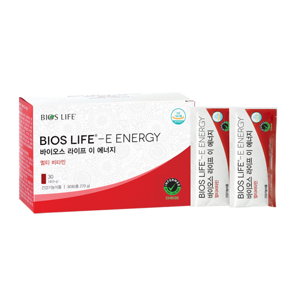

한줄
결론
결론
유니시티 바이오스 라이프 이 에너지는 식약처에 신고된 분말형 건강기능식품으로, 하루 1회 1포(9g)를 물 250~300ml에 타서 마시도록 되어 있습니다. 비타민 B1·B2·나이아신·판토텐산·B6·C의 표시량은 신고 규격으로 확인할 수 있습니다. 다만 1포당 카페인 약 80mg, 식후, 오후 4시 이전 안내는 공식 신고서와 공식 제품 페이지에서 확인하지 못했습니다.
이름은 멀티비타민이지만, 카페인부터 확인하세요.
이 글은 의학 조언이 아닙니다. 건강기능식품은 질병을 예방하거나 치료하는 약이 아닙니다. 개인 건강 상태와 약 복용은 의사·약사와 상의하세요.

이 글은 지인을 통해 전해진 제품 안내(기능성 원료 함량, 1포당 카페인 약 80mg, 물 250~300ml, 식후·오후 4시 이전, 임산부 주의)를 확인할 주장으로 보고, 공식·1차 자료와 맞춰 본 정리입니다.
조사일: 2026-11-22. 제품 포장 뒷면 라벨은 실물로 확인하지 못했습니다.
유니시티 바이오스 라이프 이 에너지는 식약처에 신고된 분말형 건강기능식품으로, 하루 1회 1포(9g)를 물 250~300ml에 타서 마시도록 되어 있습니다. 비타민 B1·B2·나이아신·판토텐산·B6·C의 표시량은 신고 규격으로 확인할 수 있습니다. 다만 1포당 카페인 약 80mg, 식후, 오후 4시 이전 안내는 공식 신고서와 공식 제품 페이지에서 확인하지 못했습니다.
B1·B2·나이아신·판토텐산·B6·C의 1포 표시량은 품목제조신고를 옮긴 자료에서 확인할 수 있습니다. [3][4]
과라나와 녹차가루가 들어 카페인은 있는 제품입니다. 1포당 약 80mg은 이번 조사에서 공식 확인하지 못했습니다. [3][11]
커피·에너지음료와 합쳐서 생각하고, 임산부와 약을 드시는 분은 전문가와 상의하는 것이 맞습니다. [3][9]
바이오스 라이프 이 에너지(Bios Life E Energy)는 유니시티의 분말형 건강기능식품입니다. 상자 앞면에는 ‘멀티 비타민’, ‘1회 9g’, ‘건강기능식품’, ‘30패킷 270g’이 보입니다. [1][2]
기능성 원료 표시량은 식약처 신고 규격의 「표시량」입니다. 실제 함량은 성분마다 표시량의 80~150% 또는 80~180% 범위로 관리됩니다. [3][4]
1일 영양성분 기준치(%)는 「식품 등의 표시·광고에 관한 법률 시행규칙」 [별표 5] 기준치로 계산했습니다. 기준치는 표시용 하루 참고량이지, 꼭 먹어야 하는 양이나 넘으면 안 되는 양이 아닙니다. [7] 계산: 표시량 ÷ 기준치 × 100. 소수점 첫째 자리에서 반올림해 정수로 적었습니다.
| 성분 | 1포 표시량 | 1일 영양성분 기준치 | 기준치 대비 | 2025 KDRI 성인 상한섭취량 | 출처 |
|---|---|---|---|---|---|
| 비타민 B1(티아민) | 3mg | 1.2mg | 250% | 설정되지 않음 | 표시량 [3][4], 기준치 [7], 상한 [8] |
| 비타민 B2(리보플라빈) | 3mg | 1.4mg | 214% | 설정되지 않음 | 표시량 [3][4], 기준치 [7], 상한 [8] |
| 나이아신 | 34mg NE | 15mg NE | 227% | 니코틴산 35mg / 니코틴아미드 850mg (19세 이상) | 표시량 [3][4], 기준치 [7], 상한 [8] |
| 판토텐산 | 12mg | 5mg | 240% | 설정되지 않음 | 표시량 [3][4], 기준치 [7], 상한 [8] |
| 비타민 B6 | 4mg | 1.5mg | 267% | 50mg (19세 이상) | 표시량 [3][4], 기준치 [7], 상한 [8] |
| 비타민 C | 100mg | 100mg | 100% | 2,000mg (19세 이상) | 표시량 [3][4], 기준치 [7], 상한 [8] |
| 카페인 | 미검증 | — | — | 식약처 권고: 성인 400mg, 임산부 300mg, 어린이·청소년 체중 1kg당 2.5mg 이하 | 함량은 공식 미확인. 권고량 [9] |
상한섭취량은 2025 한국인 영양소 섭취기준(보건복지부) 국문요약본의 수용성비타민 표입니다. 음식과 보충제를 합한 총섭취량 기준이며, 임신부·수유부 상한은 ‘부가량’이 아니라 총량입니다. [8]
건강기능식품이므로, 인정된 기능성은 아래 문구로 한정됩니다. ‘에너지 드링크처럼 각성된다’, ‘지방이 탄다’ 같은 표현은 이 제품의 기능성으로 확인되지 않았습니다. [3][4]
과라나와 녹차가루가 원재료에 있으므로, 이 제품에는 카페인이 들어 있을 수 있습니다. [3][4] 미국 유니시티 사이언스 페이지도 Bios Life E에 “중간 정도(moderate) 카페인”이 있으며 임신부·수유부·카페인에 민감한 사람은 주의하라고 적습니다. 다만 이 페이지는 한국 라벨이 아니고, 함량 숫자도 없습니다. [10]
식약처가 권고하는 카페인 최대 일일 섭취량은 다음과 같습니다. 하루 동안 넘지 않도록 주의해야 하는 최대량이며, 권고량 안이어도 두근거림·두통·불안·수면 장애가 있으면 줄이거나 중단하라고 안내합니다. [9]
| 대상 | 최대 일일 섭취 권고량 | 80mg이라고 가정하면 [추정] |
|---|---|---|
| 성인 | 400mg | [추정][미검증]권고량의 20% |
| 임산부 | 300mg | [추정][미검증]권고량의 27% |
| 어린이·청소년 | 체중 1kg당 2.5mg 이하 (예: 50kg 125mg, 60kg 150mg, 70kg 175mg) | [추정][미검증]체중 32kg이면 권고량과 같고, 그 이하면 권고량을 넘을 수 있음 |
식약처 2026년 10월 20일 보도자료 붙임의 참고용 함량입니다. 제품마다 다를 수 있어, 실제로는 각 제품 표시를 봐야 합니다. [9]
| 식품 (1회 분량, 식약처 참고값) | 카페인 |
|---|---|
| 콜라 250ml | 25mg |
| 녹차 티백 1개 | 22mg |
| 커피맛우유 200ml | 47mg |
| 에너지음료 250ml | 80mg |
| 커피음료 250ml | 103mg |
| 에너지젤리 20g | 100mg |
| 커피전문점 아메리카노 355ml | 150mg |
참고로, 「식품 등의 표시·광고에 관한 법률 시행규칙」 [별표 2]는 과라나를 원재료로 쓴 고체 식품이 1g당 카페인 0.15mg 이상이면 주표시면에 ‘고카페인 함유’와 총 카페인 함량(또는 1회 섭취량당 함량)을 적도록 합니다. [12] 9g에 80mg이라면 1g당 약 8.9mg이라 이 기준을 넘습니다. [추정] 따라서 실제 상자 앞면에 카페인 함량이 있을 수 있지만, 이번 조사에서는 앞면 홍보 사진만 확인했고 뒷면·측면 라벨은 보지 못했습니다.
1일 1회, 1회 1포(9g)를 250ml~300ml의 물에 타서 드십시오. 기호에 따라 주스나 다른 음료에 타서 드셔도 좋습니다. (유니시티 쉐이커를 사용하시면 더욱 편리합니다.)
주의사항에도 “최소 250ml~300ml의 물에 타서”라고 되어 있고, 원재료에 의한 침전물·부유물이 생길 수 있으나 이물질이 아니라고 적혀 있습니다. [3][4]
오후 시간 관련해 확인된 일반 정보는 다음과 같습니다. 이 제품 전용 지침은 아닙니다.
주스나 다른 음료에 타도 된다고 되어 있으므로, 카페인·당류가 있는 음료에 타면 그날 총량이 늘어날 수 있습니다. [추정]
여기 적는 내용은 이 제품 자체의 효과가 아닙니다. 각 원료의 일반 연구·공신력 있는 설명이며, 이 제품에 들어 있는 양은 미검증입니다.
녹차 성분으로, 일부 무작위 배정 시험을 모은 리뷰에서는 테아닌과 카페인을 함께 먹었을 때 주의·각성 관련 수행이 위약보다 나았다는 보고가 있습니다. 효과의 크기와 용량은 연구마다 다르고, 이 제품의 테아닌 함량은 알 수 없습니다. [16][17]
미국 NIH 식이보충제실(ODS)에 따르면, 긴사슬 지방산을 미토콘드리아로 옮겨 에너지로 쓰는 데 관여합니다. 건강한 성인은 몸에서 충분한 양을 만들기 때문에 보통 보충제가 필요하지 않고, 운동 능력·지방 연소에 대한 근거는 일관되지 않습니다. 이 제품의 함량은 알 수 없습니다. [18]
카페인을 포함하는 식물 원료입니다. 일반적인 식이 용량에서는 카페인 총량을 지키면 심각한 위험이 드물다는 평가가 있으나, 과다 섭취 시 증상은 카페인 과량과 비슷합니다(초조, 빈맥, 위장 불편 등). 이 제품의 과라나·카페인 함량은 미검증입니다. [19][20]
1. 다른 치료나 약물복용 중인 경우 전문의와 상의하시고 임산부는 섭취 시 주의 하십시오. 2. 이 제품의 안전하고 효율적인 이용을 위해서는 최소 250ml ~ 300ml의 물에 타서 드십시오. 3. 원재료에 의한 침전물 또는 부유물이 생길 수 있으나 이물질이 아니므로 안심하고 섭취 하십시오.
띄어쓰기는 신고 전사 원문 그대로입니다. “250ml ~ 300ml”에는 물결 앞뒤에 공백이 있습니다. [3][4]
확인된 주의 대상만 정리하면 다음과 같습니다.
당류(설탕, 결정과당)가 원재료에 있으나 함량은 미검증입니다. 당 섭취를 조절 중인 분은 실제 포장 영양정보를 확인하세요.
아래는 이번 조사에서 공식 신고서·공식 제품 페이지·법령으로 확인하지 못한 항목입니다.
이 글은 공개된 공식 자료와 공신력 있는 2차 자료를 바탕으로 한 정보 정리이며, 의학적 진단·처방·섭취 권고가 아닙니다. 건강기능식품은 의약품이 아니며, 식약처가 인정한 기능성 문구를 넘어서는 효과를 장담할 수 없습니다. 임신·수유, 질환, 약 복용, 카페인 민감이 있는 분은 의사 또는 약사와 상담한 뒤 결정하세요. 제품 표시가 바뀌었을 수 있으니, 최종 확인은 패키지와 식품안전나라 신고 내용이 기준입니다.